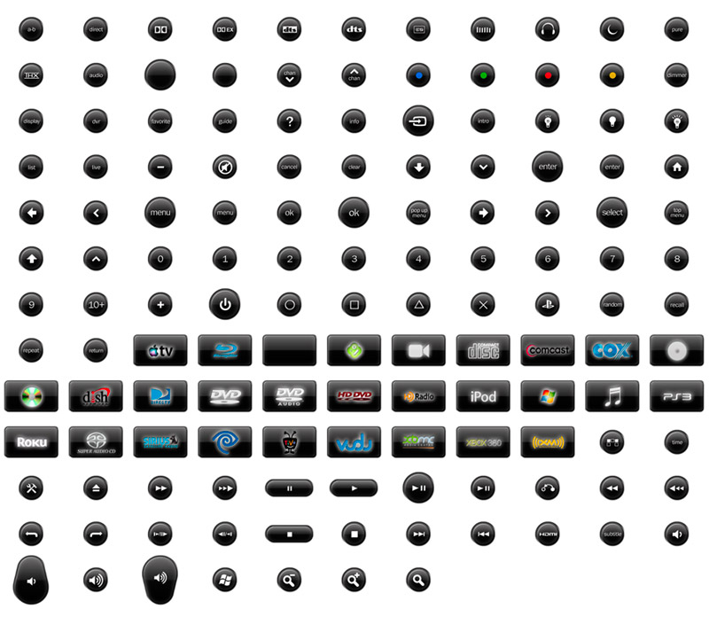

I think a lot of us would like this (at least i hope)
some preview: 
It there a way to upload this to the site somewhere?
Gr,
Ernst
{kind=link}
|
And yes i have a complete rar file with all the buttons and backgrouds in correct scale http://www.filesonic.com/file/27223035/Buttons and Backgrounds.rar |
|
Hello Ernst, Yes you can make the images available by creating your own page (either home page or in the Knowledge Base area), and attaching images to the page. And we could make them directly available in the designer too. Are they specific to some device you're using, or generic? Your original work or from somewhere else? Let me know, and will work on sharing it. |
|
Hi Juha, I've created a page in my homezone so you should be able to see all the info now. I was surfing a long time to find some decent logo's / backs and buttons and i stumbled across a very nice set. So no, they are not my own i only modified them and added some new buttons to the sets. Also multiple .PSD files are included for people to give it a try The sets are pretty "Apple" minded but that will change by time. |